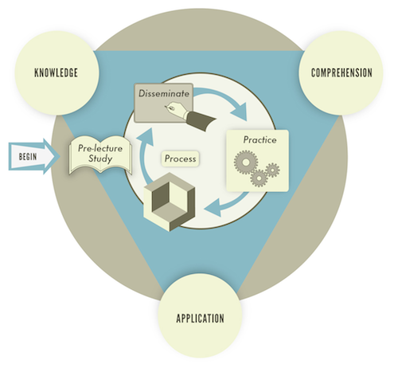
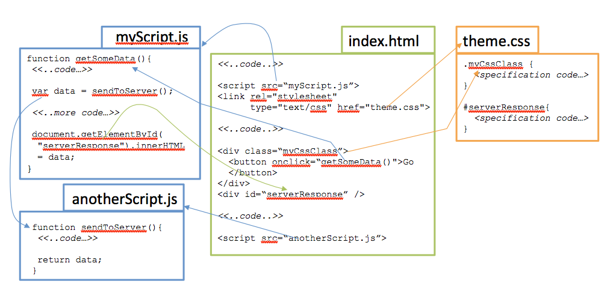
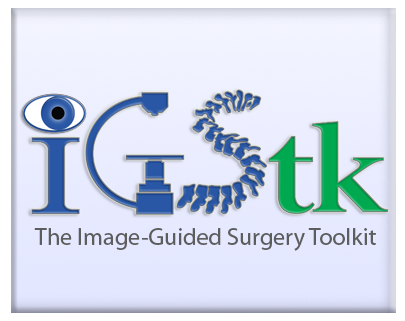
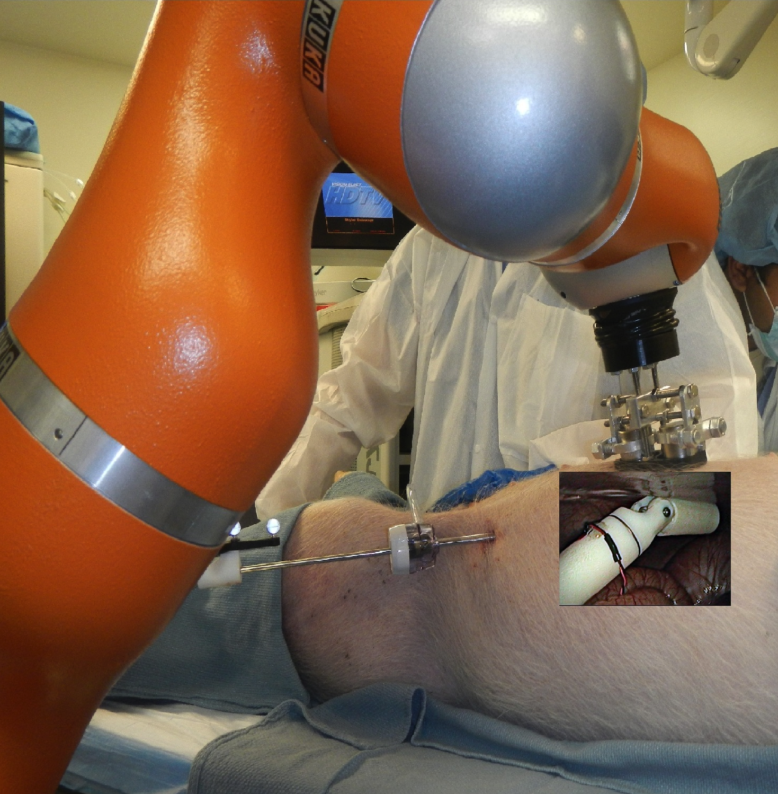

Research
My general area of research is software engineering; within this field I am currently interested in Agile Methods, Open Source Software, an mobile health (mHealth) applications.
My research methods are use-inspired, meaning I look for new contexts of use for software technologies, and adapt or discover how software engineering principles apply. Therefore my work tends to be multidisciplinary and evolutionary; multidisciplinary in my collaborations, evolutionary in that my approach is to start with specific problems and work towards more general methods.
I am also engaged in the scholarship of teaching and learning, specifically in the context of software engineering education. A decade ago I created the Software Enterprise as both a hybrid project-based pedagogy for accelerating contextual understanding and industry preparedness of our students, and as an encapsulated set of modules for practical training of software engineering skills for students. The Enterprise now forms the project spine of the B.S. and M.S. degrees in Software Engineering degree at ASU. I am currently examining how Agile approaches can improve the way we teach and learn in an on-demand world.
I am always looking for and willing to work with, motivated, intellectually curious, and dedicated graduate students! I currently have 3 funded projects, anticipate funding for 3-4 more, and also support independent study as a way to seed the research process. If you are interested in web/mobile development, agile/open source methods, and domains such as e-learning and mHealth, please make an appointment to come talk with me.
Research Projects, Interests, and Activities (click image to expand)
-

The Software Enterprise at ASU’s Polytechnic Campus uses a project spine experience as a multi-year instructional vehicle exposing students to methods and tools prevalent in today’s software practice. This website is dedicated to supporting a community of educators sharing the same beliefs and approach to Software Engineering Education. It provides free resources to anyone teaching in this area, and hopes to foster a community of teaching practitioners in software engineering.
Selected Publications
- Gary, K. “The Software Enterprise: Practicing Best Practices in Software Engineering Education”, The International Journal of Engineering Education Special Issue on Trends in Software Engineering Education, Volume 24, Number 4, July 2008, pp. 705-716.
- Gary, K., “The Software Enterprise: Preparing Industry-ready Software Engineers” Software Engineering: Effective Teaching and Learning Approaches, Ellis, H., Demurjian, S., and Naveda, J.F., (eds.), Idea Group Publishing. October 2008.
- Tvedt, J., Tesoriero, R., and Gary, K., "The Software Factory: An Undergraduate Computer Science Curriculum" Journal of Computer Science Education, 12(2), 91 - 117, 2002.
- Gary, K. “Running an Agile Class”, Proceedings of the 2014 International Conference on Frontiers in Education: Computer Science and Computer Engineering, Las Vegas, NV, July 2014.
- Csavina, K., Gary, K. and McKenna, A. “Scalability in an Industry Project Process”, Proceedings of the National Capstone Design Conference, Columbus OH, June 2014.
- Gary, K., Lindquist, T., Bansal, S., and Ghazarian, A. “A Project Spine for Software Engineering Curricular Design”, Proceedings of the 26th Conference on Software Engineering Education \& Training (CSEET 2013), Co-located with ICSE 2013, San Francisco, CA, May 2013.
- Gary, K., Verma, S., Nagappan, Y., and Branaghan, R. “Assessing Evolving Conceptual Knowledge in Software Engineering Students” Proceedings of the National Conference of the American Society for Engineering Education (ASEE 2012), San Antonio, TX, June 2012.
- Tvedt, J., Tesoriero, R., and Gary, K., "The Software Factory: Combining software engineering and computer science undergraduate education" Proceedings of the 23rd International Conference on Software Engineering (ICSE 2001), May 2001. (acceptance rate 18%)
Selected Funding
- “The Software Enterprise: A Reinforcing Pedagogical Model for Software Engineering”, National Science Foundation Course Curriculum and Laboratory Improvement program (Phase I). Sole PI, $148,344. 2009-2012 (20% acceptance rate).
- “Jazz Innovation Awards”, IBM. Co-PI (H. Koehnemann), $25,000, 2009.
- “Agile Methods for Entrepreneurship: The AME Project”, ASU Pathways to Entrepreneurship Grant (PEG), supported by the Kaufmann Foundation, $39,731. Primary PI (with Al Kagan). Period of Performance July 1, 2008 to June 30, 2009. (Acceptance rate: 3 of 11).
- "The Software Enterprise: Preparing Industry-ready Software Engineers". Arizona Board of Regents Learner-Centered Education Program. $24,041. Co-PI with Barbara Gannod. Awarded April 2005, concluded January 15, 2007. (Proposal acceptance rate: 14 out of 58).
-

I strive to remain connected to the professional community, through use-inspired research, teaching that connects to practice, consulting, and participation in the local developer community. As such I have a long history working with agile methods, open source software, and web (now mobile) software development, in academia and in industry.
My research interests derive directly to issues I see impacting software developers everyday. How does one scale agile methods? or apply them to safety-critical software? How does an open source community function? How is the rapidly changing nature of web and mobile development impact the organizational structure, development processes, and tools for the software developer?
I lump Agile, OSS, and Web/Mobile development under one roof as this common motivation drives my applied research interests
Selected Publications
- Gary K., Yaniv, Z., Guler, O. Cleary, K., and Enquoharie, A. “Source Code Control Workflows for Open Source Software”, Proceedings of the 13th International Conference on Software Engineering Research and Practice, Las Vegas NV, July 2014.
- Gary, K., Kokoori, S., Muffih, B., Enquobahrie, A., Cheng, P., Yaniv, Z., and Cleary, K. “Agile Methods for Safety-Critical Open Source Software”, Software: Practice and Experience, April 2011.
- Gary, K., Koehnemann, H., Blakley, J., Goar, C., Mann, H., and Kagan, A. “A Case Study: Open Source Community and the Commercial Enterprise”, The IEEE 6th International Conference on Information Technology: New Generations (ITNG 2009), Las Vegas, NV, April 2009.
- Acharya, R., Kagan, A., Lingam, S.R., and Gary, K “Impact of Website Usability on Performance: A Heuristic Evaluation of Community Bank Homepage”, Journal of Computer Information Systems, December 2008.
- Gary, K. and Koehnemann, H. “Component-based Deployment for Web Applications: Methods and Issues” Software Engineering for Modern Web Applications, Brandon, D. (ed.), Idea Group Publishing. 2008.
- Gary, K., Kokoori, S., David, B., Otoom, M., and Cleary, K. “Architecture Validation in Open Source Software” Proceedings of ROSATEA 2007: The Role of Software Architecture for Testing and Analysis, Boston MA, July 2007.
- Naccache H., Gannod G., and Gary, K. "A Self-Healing Web Server Using Differentiated Services", Proceedings of the 4th International Conference on Service Oriented Computing (ICSOC 2006), Chicago, IL, Dec. 2006. (acceptance rate 17%).
- Kempf, K.G., Uzsoy, R., Smith, S.F., Gary, K. “Evaluation and Comparison of Production Schedules”, Computers in Industry 42, 203-220, 2000.
- Gary, K., Lindquist, T., Koehnemann, H., and Derniame, J.C. “Component-based Software Process Support” Proceedings of the 13th International Conference on Automated Software Engineering, (ASE’98), November 1998. (acceptance rate 16%)
Funding
- Gary K. “Open Source Evaluation for the OS-URAVS Program”, Open Source Unmanned Remote Autonomous Vehicle Systems Program, $25K. Starting mid-September 2014
- Crossover Resolution over Complex Images and Development of Corpus”, National Geospatial-Intelligence Agency ATP program. PI: Anshuman Razdan, Director, I3DEA Lab. Total Amount $150,000, 20% Co-PI ($30,000).
- Workflow Automation through Open Source Enterprise portals”, Unicon Inc. $13,467. August-December 2007.
-

Aspira is a home asthma monitoring platform for monitoring children with asthma. The system integrates physical devices (an indoor air quality monitor and a digital spirometer), a serious game on a tablet, data gathering processes on the tablet, and data management and reporting capabilities on a server. The result is a system which encourages children to take proper spirometer readings, and a low-cost platform for adapting behaviors to indoor air quality.
Aspira was built in collaboration with Children's National Health System (CNHS), Dr. Ivor Horn PI.
Aspira is currently in next phase development under an R41 NIH grant (STTR) in collaboration with CNHS, Seattle Children's Hospital, ASU, and Mad*Pow of Boston (PI).
Funding
- "Software Support for a Home Asthma Monitoring Platform", contract to Children's National Health System, $9,600, 2013-14
- "Improving Asthma Control through mHealth-Based Home Monitoring", NIH STTR Phase I, RFA-MD-13-009. Total Award $225K (Mad*Pow PI, Dr. Ivor Horn, Seattle Children's Hospital clinical PI). ASU share $45K. Awarded August 2014, Period of Performance August 2014 - August 2015.
-

This mobile application implements a survey for collecting pain scores and pain burden reporting for patients with Sickle Cell Disease (SCD). The goal of this application is to assist with pain management and eventually result in reduced hospital readmissions for patients with SCD.
The PI of this project is Dr. Zenaide Quezado, Children's National Health System (CNHS) in conjunction with Kevin Cleary, PhD, Sheik Zayed Institute at CNHS.
Funding
- "Software Support for an mHealth Application monitoring Sickle Cell Disease", contract to Children's National Health System, $6,000, 2014
- "Mobile Application Development Support", Joseph E. Robert Jr. Foundation. Total Award $30K (PI, Dr. Zenaide Quezado, CNHS). ASU share $18K. Period of Performance August 2014 - August 2015.
-

The Image-Guided Surgical ToolKit (IGSTK) is an NIH-funded open source surgical toolkit for image-guided surgery. the platform was created using agile methods and safety-by-design to produce a open application development platform. The toolkit was developed by a team of developers in the open source community, and led by Kevin Cleary, Patrick Cheng, and Ziv Yaniv from Georgetown University Medical Center and now Children's National Health System, and Luis Ibanez, Julien Jomier, and Andinet Enqouharie, Kitware Inc.
ASU's involvement was primarily to support software engineering practices on the project, including requirements engineering (with Brian Blake, University of Miami), agile methods, open source code management, and software architecture validation.
I invote you to check out the IGSTK website and download a copy of the free book!
Selected Publications
- Muffih, B. and Gary, K. “Global State Validation in a Component-based Architecture”, Proceedings of the 9th Conference on Software Engineering Research and Practice (SERP’10). Las Vegas, NV, July 2010
- Gary, K., Kokoori, S., David, B., Otoom, M., and Cleary, K. “Architecture Validation in Open Source Software” Proceedings of ROSATEA 2007: The Role of Software Architecture for Testing and Analysis, Boston MA, July 2007.
- Enquobahrie, A., Cheng, P., Gary, K., Ibanez L., Gobbi D., Lindseth, F., Yaniv, Z., Aylward, S., Jomier, J., and Cleary, K. “The Image-Guided Surgery Toolkit IGSTK: An Open Source C++ Software Toolkit” Journal of Digital Imaging, August 2007. Selected as the Best Paper – Second Place for the Journal of Digital Imaging, Volume 20 2007.
- Gary, K., Andinet Enquobahrie, Ibanez, L., Cleary, K., Cheng, P., and Yaniv, Z. “The Development of the Image-Guided Surgical Toolkit (IGSTK): An Open Source Package for Medical Interventions”, Workshop on Software and Systems for Medical Devices and Services (SDMS’07) at the Real-time Systems Symposium (RTSS’07), Tucson, AZ, December 2007.
- 39. Gary, K., Blake, B., Ibanez, L., Gobbi, D., Aylward, S., and Cleary, K. “IGSTK: An Open Source Software Platform for Image-Guided Surgery” IEEE Computer Special Issue on software engineering and application of software-based medical devices and device systems, April 2006.
- 30. Blake, M.B., Cleary, K., Ranjan, S., Ibanez, L., and Gary, K. “Use Case Driven Component Specification: A Medical Applications Perspective to Product Line Development” ACM Symposium for Applied Computing (SAC2005), Santa Fe, NM, March 2005.
Funding
- “Continued Development for the Image-guided Surgical Toolkit (IGSTK)” NIH program PAR05-057 “Continued Development and Maintenance of Software”. PI: Kevin Cleary, Ph.D. ISIS Center, Georgetown University Medical Center. ASU tasked under “State Machine Validation” (subcontract PI K. Gary) $146,852 for 3 years. Review panel score 129 (top 2.5% of reviewed proposals) (NIH’s old scoring, range 100-500, lower scores better).
- “Image-Guided Surgery Toolkit”. Georgetown University Medical Center (subcontract from NIH STTR), $72,436. 2005-06
-

The Health Engineering Applications Laboratory (HEAL) on ASU's Polytechnic Campus is a multidisciplinary lab dedicated to creating engineered solutions to today's healthcare problems. We work with doctors, social scientists, and caregivers to produce and integrate technologies for greater social good. Our current focus is on robotics, mobile health (mHealth), and serious gaming applications.
One example HEAL project was R-NOTES, conducted at Children's National Health System (CNHS), which created a wirelessly-controlled link robot for NOTES procedures. In this procedure, the patient "swallows" a link robot through an endoscopically inserted tube into an insufflated abdomen. The link robot is anchored to the abdominal wall using an externally mounted magnet controlled by a 7-DOF Kuka industrial robot arm. Once anchored, the robot's 3 DOF is manipulated through wireless (ZigBee) commands sent via a controlling application. R-NOTES was developed as part of an Army-funded STTR, Kevin Cleary PI at CNHS. Risto Kojchev completed his M.S. thesis on the R-NOTES project.
Co-leaders of the HEAL include John Femiani, Ashish Amresh, Ashraf Gaffar, and Tom Sugar
Selected Publications
- Koutenaei, B Azizi and Kojcev, R and Wilson, E and Gary, KA and Navab, N and Cleary, K. “Do we really need Robots for NOTES”, International Journal of Computer-Assisted Radiology and Surgery (CARS), vol. 8, no. 1, pp. 201-205, Springer 2013.
- Gary, K., Kojcev, R., and Cleary, K. “A Systems Integration Architecture for NOTE Surgery”, Proceedings of the 16th Conference on Software Engineering and Applications (SEA 2012). Las Vegas, NV, November 2012.
- Gary, K., Kocjev, R., and Cleary, K. “Observations on the Evolving Maturity of Software and Systems Architecture Supporting Surgical Procedures”, Workshop on System of Systems of Medical Devices (SoSMD 2011). Kansas, November 2011.
- Bamshad A.K., Kojcev R., Wilson E., Gary K., Navab N., Cleary K. “Integrated and teleoperated system for wireless Robotic Natural Orifice Transluminal Endoscopic Surgery (R-NOTES)” The 2013 National Image-Guided Therapy Workshop, Washington D.C., June 2013.
Funding
- Health Engineering Applications Laboratory (HEAL), ASU CTI SSE internal seed program. $10,000, Spring 2013